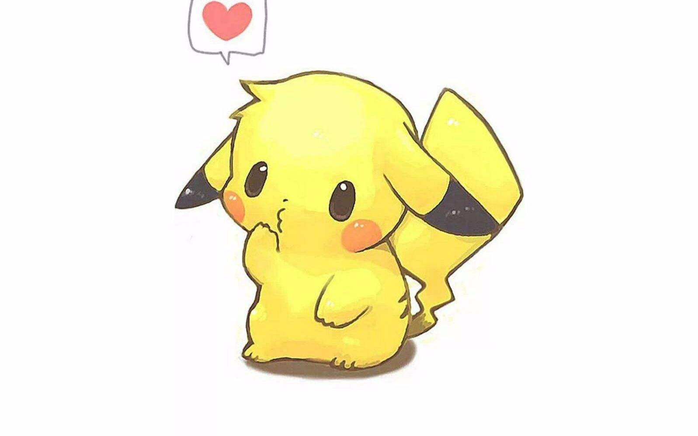

当前浏览器不支持audio
暖阳THU
首页
友情链接
开发日志
文档系统

目前系统还在开发中,并不是稳定版本,还希望大家积极反馈bug
暂时没有音乐正在播放
暖阳THU
_暖暖的太阳_
1
文章
1
日记
关注
私信
音乐盒子
上一首
暂停
播放
下一首
曲目
点击更改音乐哦
1
致你 - yihuik苡慧
2
落在生命里的光 - 尹..
3
这就是爱吗 - 杨胖雨
4
在你的身边 - 盛哲
5
失眠飞行 - 接个吻，..
6
负重一万斤长大 - 太一
7
八小时时差 - DJ
8
刚刚好 - 薛之谦
9
他不懂 - 张杰
10
与火星的孩子对话 -..
11
把回忆拼好给你 - 王..
12
无人 - 匿名
13
哪里都是你 - 队长
公告栏
目前系统还在开发中,并不是稳定版本,还希望大家积极反馈bug
更多功能
反馈bug
已回到顶部
你可以尝试以下几种方式联系
如果以上方法无回应
「 点击空白处关闭窗口 」
糟糕，你的浏览器好像无法查看
暖阳THU
惜时 共勉
首页
友情链接
哔哩哔哩
GitHub
文档系统